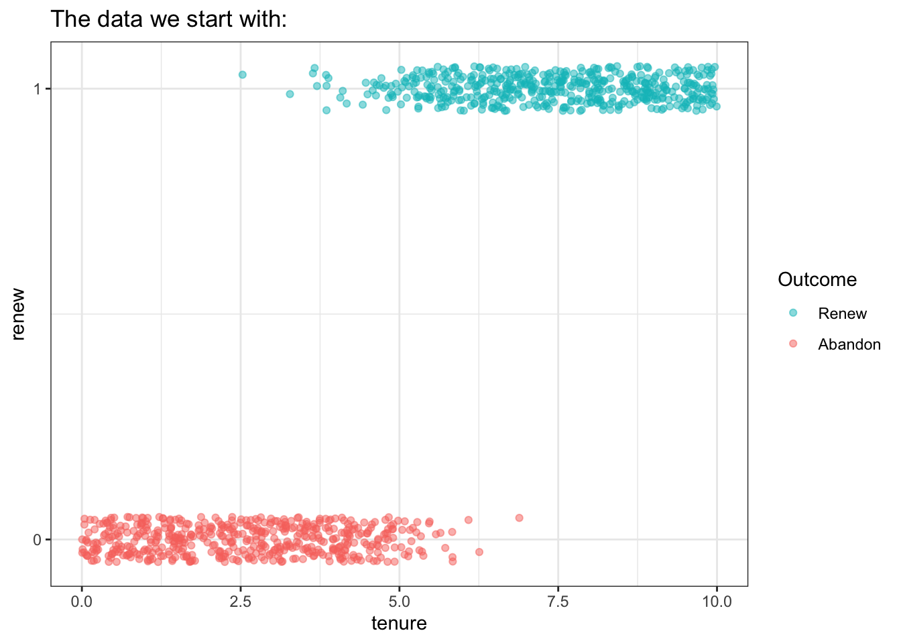
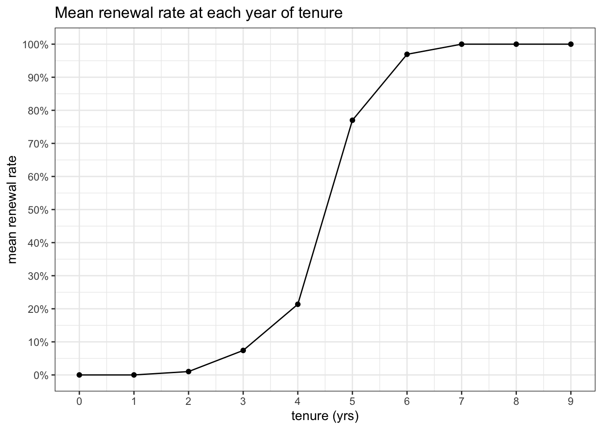
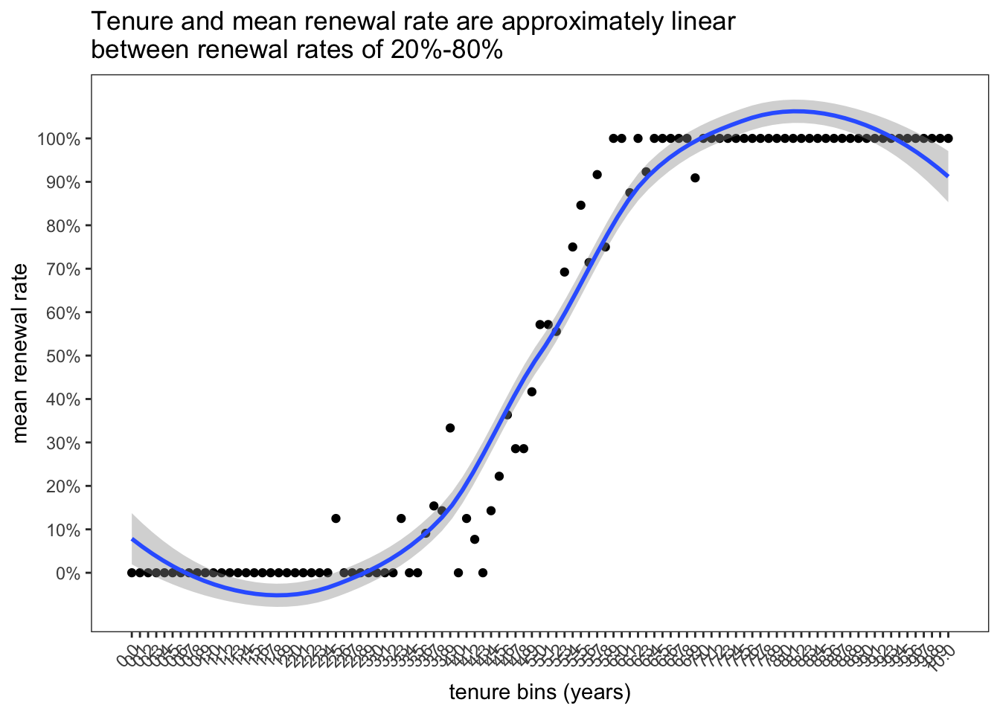
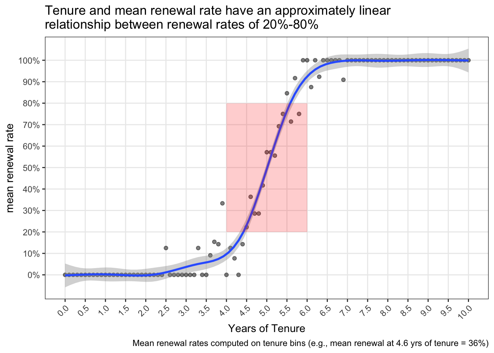
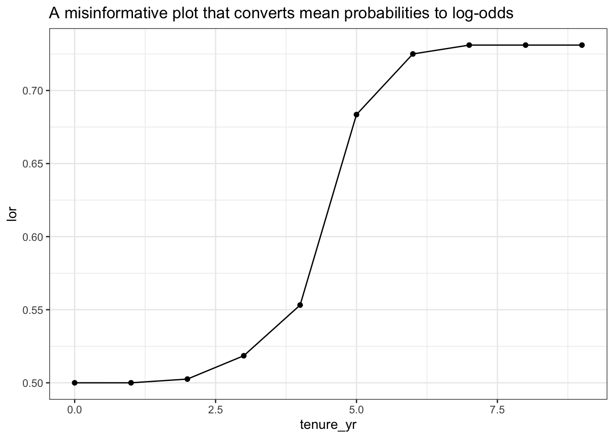

pacman::p_load(tidyverse, glue, scales, patchwork, conflicted, gtsummary, broman)conflict_prefer("filter", "dplyr")theme_set(theme_bw())logit <-function(x) 1/ (1+exp(-x))log_odds_to_prob <-function(log_odds) { prob <-exp(log_odds) / (1+exp(log_odds))return(prob)}prob_to_log_odds <-function(prob) {if (any(prob <=0| prob >=1)) {stop("Probabilities must be between 0 and 1 exclusively") } log_odds <-log(prob / (1- prob))return(log_odds)}
TL;DR:
This is a deep dive into the nature of the linearity in logistic regression models.
For binary outcomes, the relationship between your predictor and your mean outcome is approximately linear for outcomes between 20%-80%, but in the tails the relationship is certainly nonlinear.
There will be essentially no difference between the coefficients estimated by a typical linear regression and logistic regression when outcome rates are between 20%-80%, but for more extreme probabilities the linear regression is going to start talking nonsense.
What was cool (for me) to see in these simulations was the degree to which the logit functions transforms probability values into a straight line. Perhaps obvious in hindsight, but cool to see for the first time.
I also found it unintuitive to think about simulating a linear relationship in terms of log-odds ratios. It’s easy for me to think linearly that a year of tenure will improve retention by say 1% point, but it was initially harder for me to think about and plan a simulation that states “a year of tenure will increase retention by 2 log odds.” It got easier to think in log odds when I embraced the assumption that my log-odds coefficient is declaring a relationship where the terure = 0.
Code
INT_LOR <--10DELTA_LOR <-2
In the data that follow I am simulating data where the probability of the outcome event is very low for new customers, 0.005%, and the probability of the outcome event increases massively for customers at year 4. This pattern will not exist in most data sets, so set your simulation patterns to reflect your expected data conditions if you want to apply this code.
Simulate Binary Outcome (Contract Renewal) based on Customer Tenure
We start with binary outcomes and work backward to infer the parameters.
Code
# Set seed for reproducibilityset.seed(123)# Number of observationsn <-1000# Create a data framedf_sim <-tibble(tenure =runif(n, min =0, max =10),# code in a linear relationship between tenure and log-odds of retainingpred_lor = INT_LOR + DELTA_LOR * tenure,# convert log odds to probabilityp =logit(pred_lor), # simulate individual outcomesrenew =rbinom(n, size =1, prob = p))# View the first few rows of the simulated datahead(df_sim)
df_sim |>ggplot() +geom_jitter(aes(x = tenure, y = renew, color =factor(renew)), alpha = .5, height = .05) +scale_y_continuous(breaks =0:1) +labs(color ="Outcome", title ="The data we start with:") +scale_color_discrete(breaks =c(1,0), labels =c("0"="Abandon", "1"="Renew"))

Code
df_summ <- df_sim |>mutate(tenure_yr =floor(tenure)) |>summarise(pr_complete =mean(renew),.by = tenure_yr ) df_summ |>ggplot(aes(x = tenure_yr, y = pr_complete)) +geom_point() +geom_line() +scale_y_continuous(breaks =seq(0,1,.1), labels=percent) +scale_x_continuous(breaks =-10:10) +labs(x ="tenure (yrs)",y ="mean renewal rate",title ="Mean renewal rate at each year of tenure")

Code
df_summ_tenth <- df_sim |>mutate(tenure_tenth =round(tenure, 1)) |>summarise(pr_complete =mean(renew),.by = tenure_tenth ) df_summ_tenth |>ggplot(aes(x = tenure_tenth, y = pr_complete)) +geom_point() +geom_smooth() +scale_y_continuous(breaks =seq(0,1,.1), labels=percent) +scale_x_continuous(breaks =seq(0,10,.1)) +labs(x ="tenure bins (years)",y ="mean renewal rate",title =str_wrap("Tenure and mean renewal rate are approximately linear between renewal rates of 20%-80%", 60)) +# coord_cartesian(ylim = c(.2,.8), xlim = c(3.8,6)) + theme(axis.text.x =element_text(angle =45, vjust =1, hjust=1), panel.grid =element_blank())

Code
PR_EX <- df_summ_tenth |>filter(tenure_tenth ==4.6) |>pull(pr_complete) |>percent()df_summ_tenth |>ggplot(aes(x = tenure_tenth, y = pr_complete)) +geom_point(alpha=.5) +geom_smooth(method='gam') +scale_y_continuous(breaks =seq(0,1,.1), labels=percent) +scale_x_continuous(breaks =seq(0,10,.5)) +labs(x ="Years of Tenure",caption =glue("Mean renewal rates computed on tenure bins (e.g., mean renewal at 4.6 yrs of tenure = {PR_EX})"),y ="mean renewal rate",title =str_wrap("Tenure and mean renewal rate have an approximately linear relationship between renewal rates of 20%-80%", 60)) +# coord_cartesian(ylim = c(.2,.8), xlim = c(3.8,6)) + theme(axis.text.x =element_text(angle =45, vjust =1, hjust=1), panel.grid.minor =element_blank()) +annotate("rect", xmin =4, xmax =6, ymin = .2, ymax = .8, fill ="red", alpha =0.2)

What’s kind of wild is that the the S-curve you see above becomes a straight line when you convert to the probability values to log-odds, but it’s not as simple as converting the mean probabilities to log odds:
Code
df_summ |>mutate(lor =1/ (1+exp(-pr_complete)), ) |>ggplot(aes(x = tenure_yr, y = lor)) +geom_point() +geom_line() +labs(title ="A misinformative plot that converts mean probabilities to log-odds")

Let’s fit a model and find out why …
Fitting a model
glm1 <-glm(renew ~ tenure, family ="binomial", df_sim)gtsummary::tbl_regression(glm1, intercept =TRUE)
df_demo |>filter(between(tenure, 4, 7)) |>pivot_longer(-tenure,names_to ="Outcome Type",values_to ="value" ) |>ggplot(aes(x = tenure, y = value, color =`Outcome Type`)) +geom_line() +scale_x_continuous(breaks =0:10) +scale_y_continuous(breaks =c(-3:5)) +labs(title =str_wrap("Zooming in on tenure between 4-6 yrs to contrast probability and log odds values", 65))
I found that translating the expected increase in probability into its associated local log-odds change made the process more intuitive, but my imagination still broke down in the tails. On further reflection I see how (typically) I do implicitly assume that the linear relationship will taper off in the tails, and this is naturally reflected in the interpretation of log odds. Increasing log odds by 1 reflects a 23% increase in the probability of an outcome when the base rate is 50%, but that same change in log odds reflects only a 0.4% change when the base rate is 99%.
Not all binary outcomes will not have a relationship with their predictor(s) that follows this tapering pattern.
Higher doses of an effective medicine may have a diminishing return on survival rates, and at extreme doses they will display an inverted relationship: poisoning the patient and lowering survival rates. Such a relationship is poorly modeled by a logistic regression.
In cases of popular trends, we may see increasingly strong relationships between predictor and outcome: Every 1 unit increase in market saturation may in fact return even greater increases on the likelihood of further adoption until total saturation or a monopoly is achieved at which point further growth stops suddently rather than in an extended taper.
The point of all this is to say … assumptions have consequences, so think carefully about yours.
Supplement
Code
df_new |>pivot_longer(-tenure,names_to ="outcome_format",values_to ='outcome' ) |>ggplot() +geom_jitter(data = df_sim, aes(x = tenure, y = renew, color =factor(renew)), alpha = .2, height = .25) +geom_line(aes(x = tenure, y = outcome, color = outcome_format)) +scale_x_continuous(breaks =0:10) +labs(title ="All the data and predictions in one plot", color =NULL, x ="Customer Tenure (yrs)", y ="Predicted Outcome") +scale_color_manual(breaks =c("1","0","pred_lor","pred_prob"),values =c("pred_lor"="orange", "pred_prob"='black', '1'='green', '0'='red' ),labels =c("1"="Renewal","0"="Cancellation","pred_lor"="Log Odds (Renew)", "pred_prob"="Pr(Renew)" ))